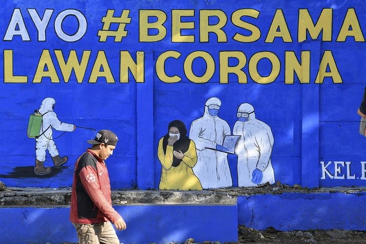

Lockdown or Not Lockdown
Kompas.com - 13/09/2020, 10:33 WIB
Editor Heru Margianto

SEMENTARA Hamlet dihantui dilema “To be or not to be” maka bangsa Indonesia sedang dihantui dilema “Lockdown or not lockdown”.
Waswas
Sebagai seorang insan yang sudah berusia di atas 70 tahun saya senantiasa waswas setiap saat terpapar Corona yang terbukti ganas menghisap nyawa manusia.
Sebagai insan awam yang tidak tahu apa pun soal pandemi apalagi penanggulangannya, saya tidak berani melibatkan diri ke dalam polemik pro dan kontra PSBB.
Namun saya terkesan kepada wejangan mantan dua kali wapres pada dua presiden yang kini menjadi Ketua Umum PMI, Bapak Jusuf Kalla yang berpengalaman menghadapi dampak prahara tsunami Aceh dan gempa Poso.
Ia mengingatkan kita semua bahwa dalam menghadapi musibah kebakaran sebaiknya yang dipadamkan adalah apinya. Bukan asapnya.
Wejangan Pak JK memiliki makna lebih nyata yaitu bahwa “api” masalah pagebluk Corona adalah kesehatan sementara ekonomi adalah “asap”.
Dengan logika dangkal seperti yang saya miliki juga dapat dipahami bahwa manusia yang tidak sehat tentu tidak bisa melakukan kegiatan secara baik termasuk kegiatan ekonomi. Orang sakit tidak bisa berperan sebagai penggerak mekanisme mesin ekonomi.
Nafkah
Ketika saya menanyakan kepada Pak JK pada acara gelar bincang Jaya Suprana Show 10 September 2020 tentang bagaimana nasib teman-teman yang tidak-bisa-tidak terpaksa harus ke luar rumah demi mencari nafkah sehingga banyak yang bilang bahwa lebih baik mati karena Corona ketimbang karena kelaparan, maka Pak JK yang kebetulan juga pengusaha sukses itu bijak menyatakan bahwa nasib rakyat kecil merupakan tanggung jawab pemerintah.
Saya tidak berani membantah pak JK sebab pada kenyataan memang pemerintah Jerman telah melaksanakan kebijakan penyelamatan ekonomi akibat pagebluk Corona dengan memberikan subsidi dana kepada segenap warga dan UMKM Jerman.
Bahkan pemerintah Jerman memberi subsidi sewa rumah kepada para penyewa rumah agar bisa membayar sewa rumah sehingga para warga yang menyewa mau pun menyewakan rumah bisa bertahan hidup pada masa pagebluk Corona.
Pancasila
Memang lain padang lain belalang, maka lain Jerman lain Indonesia. Saya tidak berani mengaku bahwa diri saya Pancasilais, namun saya merasa yakin bahwa pemerintah Indonesia pasti Pancasilais.
Dengan teguh berpedoman pada sila Kemanusiaan yang Adil dan Beradab serta Keadilan Sosial untuk Seluruh Rakyat Indonesia layak diyakini bahwa pemerintah Indonesia pasti mampu mempersembahkan kebijakan terbaik dalam upaya menanggulangi angkara murka virus Corona yang sedang merajalela ganas merusak kesehatan bahkan mencabut nyawa manusia.